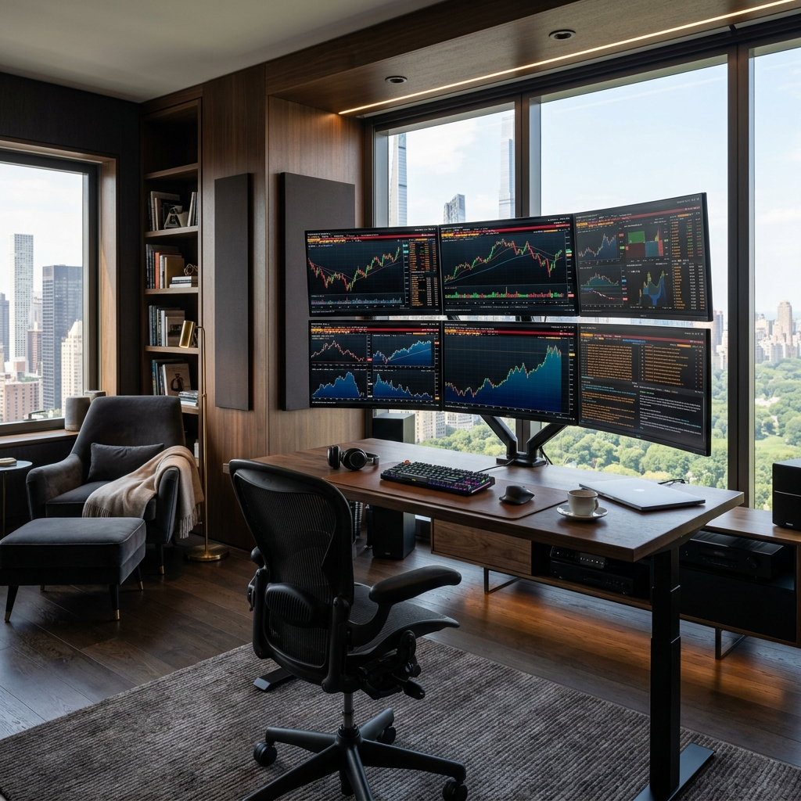
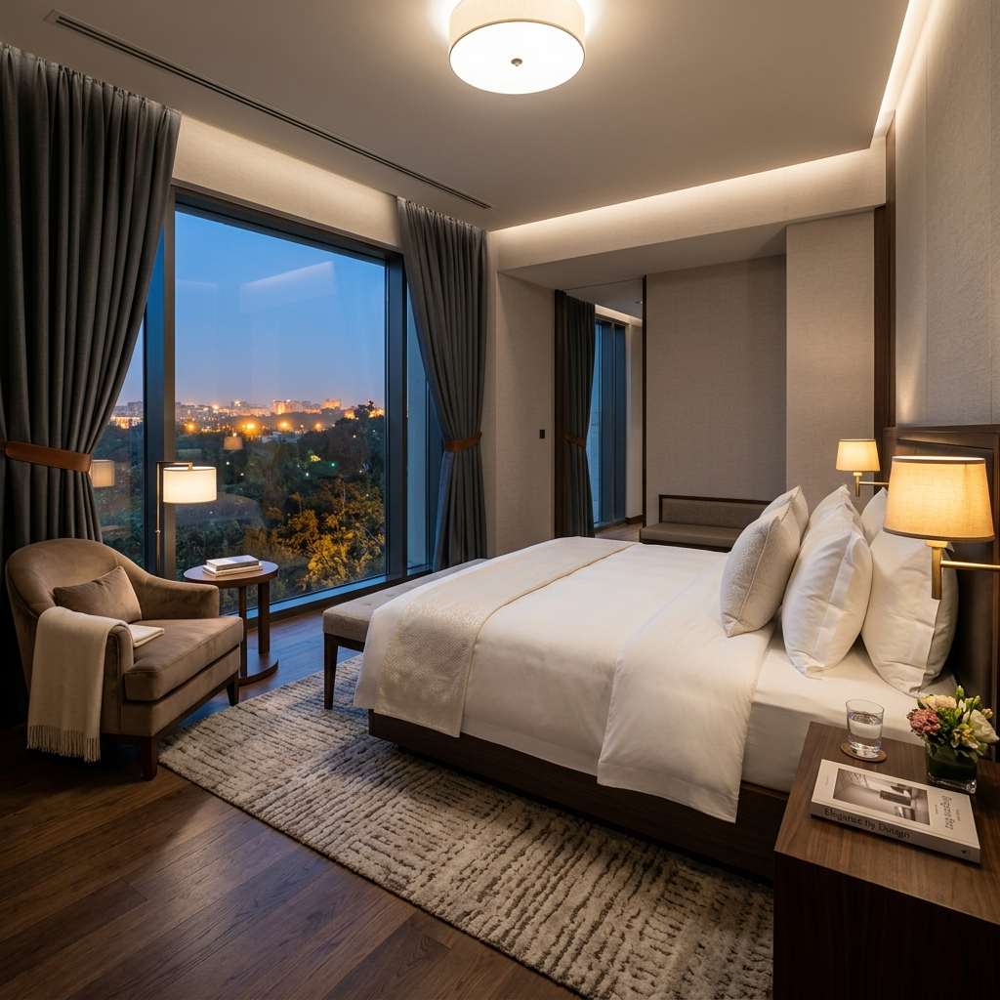
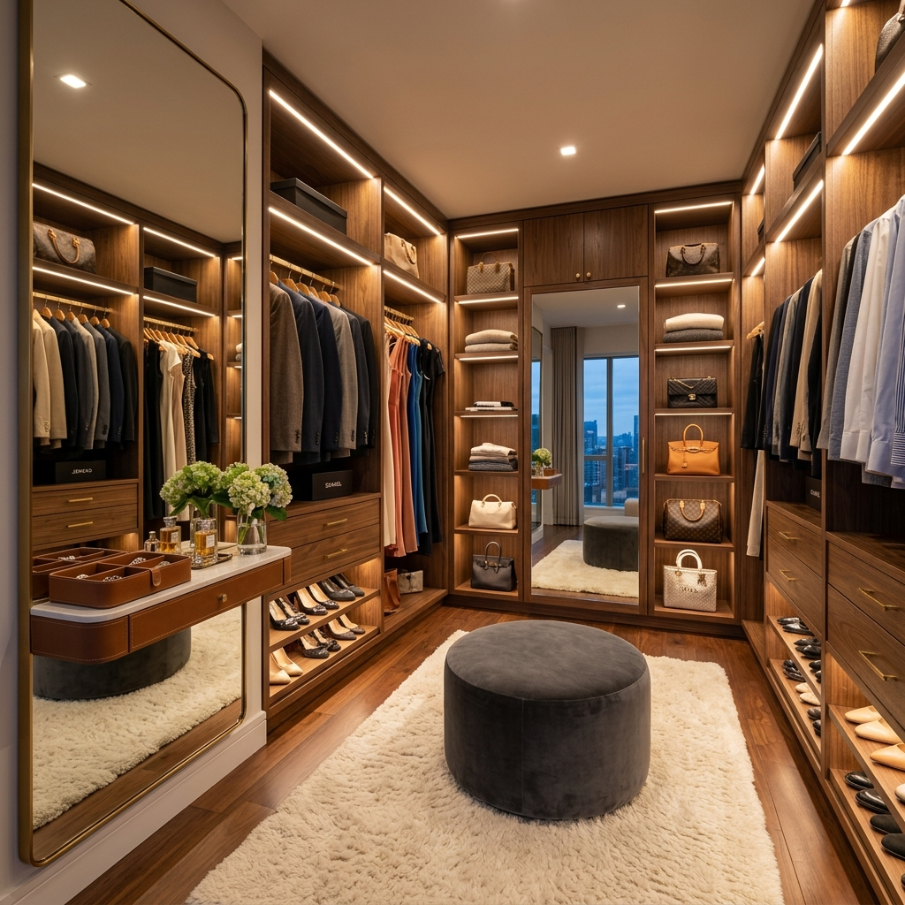
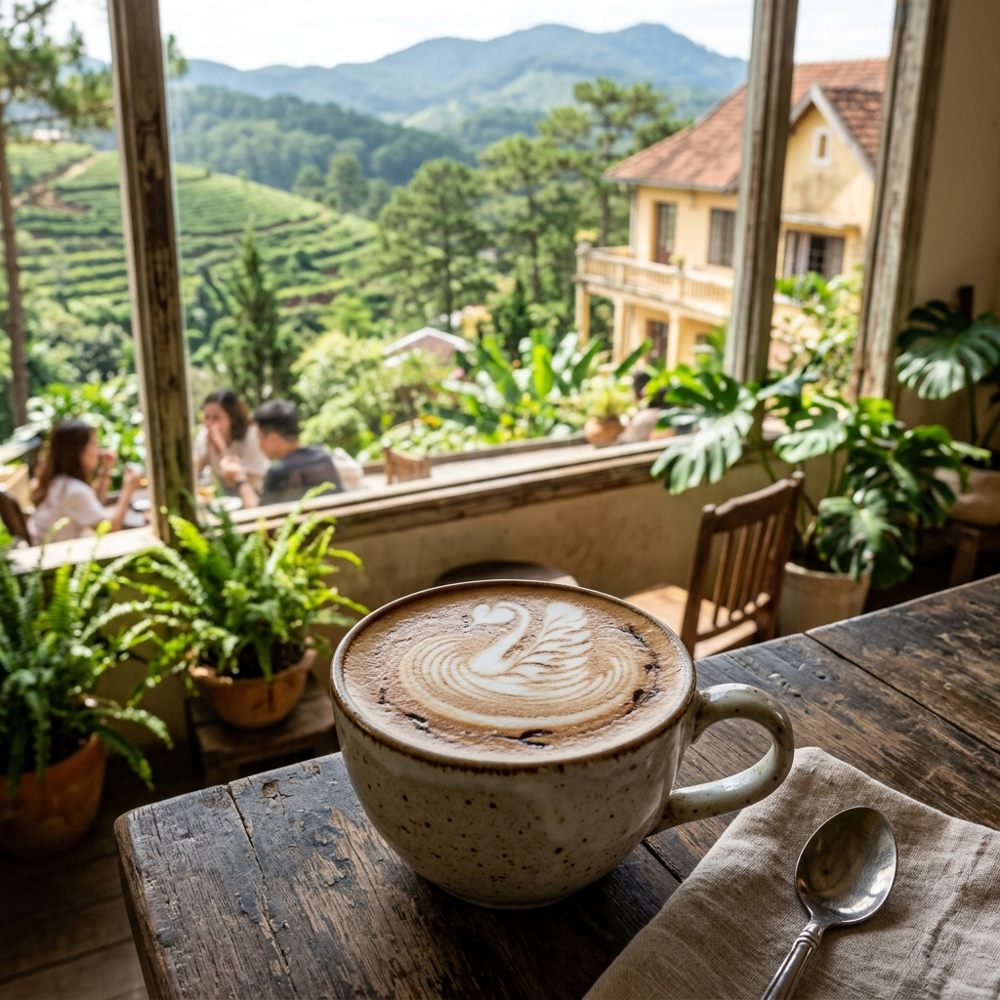

💰 財務戰略
- 2026 末資產 650 萬（校準後現實版）
- 0050 月投 1.8 萬不間斷
- 資產是「選擇權」，不是「翻身證書」
30 歲 · 從「翻身」到「選擇權」 · 從「終點」到「節奏」
「我不再靠意志力死撐，而是學會傾聽靈魂。
我建立系統，是為了守護自由；我保持紀律，是為了不再補位。」
過去：能量掏空模式
未來：能量取回模式
「我不為他人的無能負責。當我學會說『我尊重你的決定』，我便拿回了人生的主控權。」
「等量付出是關係的底線。我的時間非常珍貴，不再捐贈給拒絕長大的靈魂。」
「我想要 1 億——但不是為了翻身給誰看，而是為了讓未來的自己有充足的選擇權。3000 萬已是 lifestyle 啟動點，1 億達不到也 OK。」
— 2026-05-13 校準
「凍卵不是為了未來生小孩——是為了讓現在 30 歲的我，有時間搞清楚他是不是對的人，而不被生育倒數逼著做決定。」
— v1.2 30 歲校準 · 關係 deadline 2027-05
在自己的房子裡像住五星級飯店一樣醒來，
一年有 3-6 個月，世界其他角落也是我的家。
30 歲的我：嘉實量化 PM · 已有對象但不確定 · 想生但要對的人
v1.2 三大動作：2026 Q4 越南獨旅 · 2027 凍卵 · 2027-05 關係 deadline
3000-3500 萬 → Lifestyle 啟動 · 主路徑、必達
中性 25% 年化 + 月投 1.8 萬 · 2027 扣除凍卵 30 萬
1 億 → 影響力 + 餘裕 · 無死線、達不到也 OK
達到 A 軌 3000 萬後，你可以選擇：
· 停下來（這就是 lifestyle）
· 繼續複利（自然滾動到 1 億）
· 加碼影響力（自媒體 / 委託管理）
這個決定 3000 萬時的你比現在的你更清楚
11-12 月越南獨旅 5-7 天（大叻 + 會安）· 一個人 · 30 歲送自己的禮物
Q3 預約 2-3 家凍卵診所諮詢 · 開始有意識觀察「他是否合適」
資產 650 萬 越南獨旅 凍卵諮詢 關係觀察期啟動Q1 進階獨旅 19-21 天（凍卵前能量充電）· 一個人
2027-05 關係 Deadline：繼續 / 結束 / 接受現狀
Q2-Q3 凍卵療程（取卵 15-25 顆 · 動用資產 30-50 萬）
資產 800 萬 凍卵 -30 萬 關係 deadline 2027-05 時間焦慮解除選一個喜歡的 base 深度住 · 測試「沒有正職的真實感」
抒發型自媒體可在此時啟動 · 卵子已存好，從容找對的人
資產 1060 萬 深度旅居職涯：A1 回嘉實 / A2 辭職自由 / A3 轉兼職顧問
關係：結婚 / 同居 / 共同 lifestyle 試水
資產 1346 萬 由體驗決定生育選擇：自然受孕 / 用凍卵 / 接受不生
研究買房（為自己 / 為小家庭）· 一年國外旅居 3-4 個月
資產 1675 萬 生育決定35 歲底線：生 / 用凍卵 / 接受不生（最後決定）
出手 1500-2500 萬的房子 · 設計浴缸 + 橢圓雙面盆
資產 2112-2658 萬 海外旅居 3-4 個月/年自有房 = 五星級避世空間 · 一年 3-6 個月海外
找出最愛的 2-3 個 base · 被動覆蓋全部支出
A 軌達成 3000-3500 萬 B 軌無死線



| 城市 | 飛行 | 月支出 | 適合季節 | 主題 |
|---|---|---|---|---|
| 京都 / 東京 ★ | 3.5h | 12-18 萬 | 4-5 月、10-11 月 | 美感、寧靜、櫻花/楓葉 |
| 清邁 | 4h | 5-8 萬 | 11-2 月（涼季） | 養生、社群、低成本 |
| 沖繩 | 1.5h | 10-15 萬 | 春秋 | 飛行短、自然療癒、第一次獨旅低門檻 |
| 首爾 | 2.5h | 12-16 萬 | 春秋 | 美食、購物、文化 |
| 峇里島烏布 | 5h | 6-10 萬 | 4-10 月 | 瑜伽、冥想、療癒 |
| 里斯本 / 波多 | 長程 | 10-15 萬 | 5-9 月 | 歐洲基地、自媒體圈 |
「你已經用了 10 天特休，但都用在跟媽媽、朋友出國——『好像沒有真正照顧到自己』。
這不是你的錯。但這提醒我們：下一次特休，第一順位是你自己。
媽媽永遠都會在，朋友隨時可以見，
但『一個人安靜地存在 19 天』這件事，
在『成為媽媽的女兒 / 朋友的朋友 / 公司的 PM』三十幾年後，
你還沒真正體驗過。
不是自私，是回家——回到「你」本身。」
系統化覆盤與能量校準